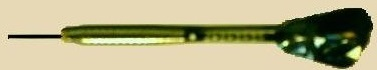
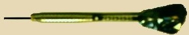

Darts Eszkozok
| A Dartstábla | Minden darts tábla, ami steel darts versenyeken használható, a következőképpen nézzen ki:
|
| A dobóléc | A dobóléc méretei: 38 mm magas és minimum 610 mm, maximum 1000 mm hosszú. Elhelyezés a táblától 2,37 m távolságra, horizontális síkban a darts tábla középpontjától lelógatott függősúly tengelyvonalában. Az átfogó távolsága a bull középpontjától a dobóléc közepéig 2,93 m legyen. |
| A dart | Steel szakág esetén Hossza nem lehet több, mint 30,5 cm, a súlya nem lehet több, mint 50 g. Minden dart-nak legyen tű alakú hegye (1), ami a testhez (2) rögződik. A test hátsó végénél legyen a tollszár (3), amihez a tollat rögzítik. A darts készlet három darabból áll. Soft szakág esetén A játékos hozza a saját dartját, amelynek hossza nem lehet több 20 cm-nél, a súlya nem lehet több 18 g-nál. Az eltérés mindkét esetben plusz 10% lehet. Minden dartnak legyen műanyag, tű alakú hegye, ami a testhez rögződik. |